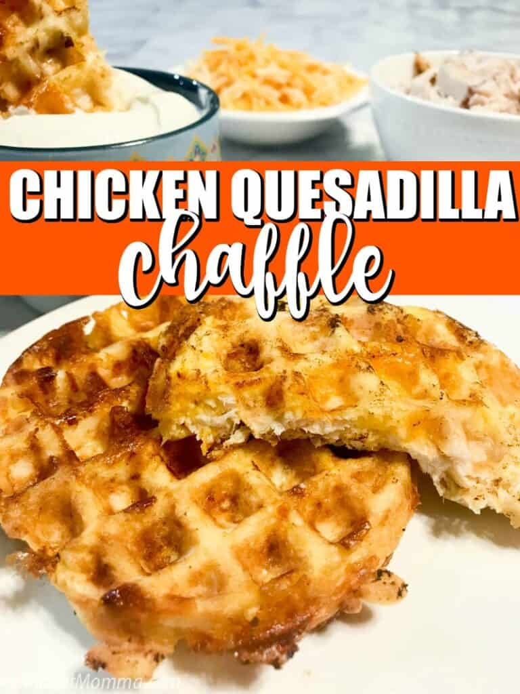

Chicken Quesadilla Chaffle

Description
Quesadilla Chaffles taste just a like a chicken and cheese quesadilla. The great thing about them is it is a low carb chicken and cheese quesadilla that has no flour at all!
Ingredients:
- A chaffle-maker. You can order one off Amazon. They are basically single-serving waffle makers.
- 1/3 cup cooked, chopped chicken
- 1 egg
- 1/3 cup shredded cheddar jack cheese
- 1/4 tsp Taco seasoning
- Cooking Spray
Steps:
- Heat up the chaffle-maker.
- In a small bowl mix the egg, taco seasoning.
- Once mixed add in the diced cooked chicken and the cheddar jack cheese.
- Add 1/2 of the batter into your mini waffle maker and cook for 4 minutes.
- If they are still a bit uncooked leave it cooking for another 2 minutes.
- Then cook the rest of the batter to make a second chaffle.
- Serve with salsa and/or sour cream for dipping.